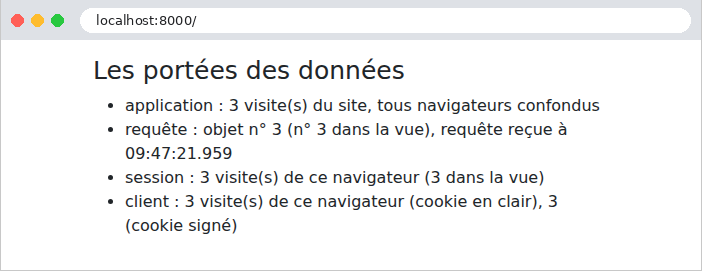

6. Portées des données
Une application web sert de nombreux utilisateurs à la fois, et chacun d'eux enchaîne de nombreuses requêtes. Une donnée peut donc être partagée à plusieurs niveaux, qu'on appelle sa portée :
- la portée application : la donnée est partagée par tous les utilisateurs, pendant toute la vie de l'application (la liste des médecins, par exemple) ;
- la portée requête : la donnée n'existe que le temps de traiter une requête (le modèle d'une vue, l'utilisateur connecté tel qu'il a été reconnu pour cette requête) ;
- la portée session : la donnée est propre à un utilisateur, et doit survivre d'une requête à la suivante (la langue choisie, un panier) ;
- la portée client : une donnée confiée au navigateur lui-même, dans un cookie.
En [PHP], ces portées prennent un tour particulier, parce que l'application est reconstruite à chaque requête (exemple 01) : rien ne survit en mémoire d'une requête à la suivante. Toute donnée qui doit durer plus longtemps qu'une requête est donc rangée hors de [PHP] : dans le cache, une base de données, des fichiers, ou chez le client. C'est la conception dite « sans partage » (shared nothing) : chaque requête est traitée isolément, par un processus qui ne partage rien avec ceux qui traitent les autres. Elle a de grands avantages : une erreur n'affecte qu'une requête, aucune donnée ne fuit d'un utilisateur à l'autre, et l'on peut faire tourner plusieurs serveurs identiques derrière un répartiteur de charge, pourvu qu'ils partagent le même cache et la même base.
En [Symfony], chaque portée a son support :
Portée | Support | Durée de vie |
application | le cache (service [cache.app], exemple 20), ou la base de données | la durée choisie, ou sans limite |
requête | les services du conteneur (un seul objet par classe, pendant la requête), les attributs de la requête (exemple 12) | le traitement d'une requête |
session | la session ([$request->getSession()], exemple 20), gardée par le serveur, retrouvée grâce à un cookie | jusqu'à la fermeture du navigateur par défaut, et au plus la durée de vie des sessions de [PHP] (24 minutes d'inactivité par défaut) |
client | un cookie ([Cookie::create], exemple 22), en clair | la durée donnée au cookie |
La session de [Symfony] est une session tenue par le serveur, comme celles de [Java] ([JSESSIONID]) ou du [PHP] classique, dont elle reprend d'ailleurs le mécanisme et le cookie ([PHPSESSID]) : ses données sont rangées sur le serveur (un fichier par session, avec la configuration de nos exemples), et le navigateur n'en détient que l'identifiant, un nombre aléatoire impossible à deviner. C'est une différence avec [Flask], dont la session est rangée tout entière dans un cookie signé, chez le client.
6.1. Exemple 23 : les portées
Le fichier [config/packages/framework.yaml] configure la session et les verrous, comme à l'exemple 20.
6.1.1. Les objets : src/Service/CompteurService.php et RequeteInfos.php
- lignes 12-16 : le service reçoit le cache de l'application et la fabrique de verrous (exemple 20) ;
- lignes 20-32 : un compteur de portée application : un nombre rangé dans le cache, sous une clé, et augmenté de 1 à chaque appel. Le cache « fichier » de nos exemples n'offre pas d'opération d'incrémentation atomique : il faut lire la valeur, l'augmenter, puis l'écrire, et deux requêtes simultanées pourraient lire la même valeur : une visite serait perdue. Un verrou, un par clé, protège donc la lecture et l'écriture ; le bloc [finally] le libère dans tous les cas, même après le [return] de la ligne 28 ;
- lignes 34-37 : le compteur des visites.
- lignes 10-12 : des propriétés déclarées [readonly] une à une (et non la classe entière) : elles ne peuvent être affectées qu'une fois, par le constructeur ;
- lignes 16-22 : des informations de portée requête : un numéro, tiré d'un compteur commun à toutes les requêtes (le service précédent, sous une autre clé), et l'heure de la requête, avec ses millisecondes (format [v]). Le constructeur reçoit le [CompteurService] du conteneur : un service peut en demander un autre, exactement comme une action.
Aucune configuration n'est nécessaire : par défaut, un service du conteneur est partagé (shared). Le conteneur crée l'objet à la première demande, puis redonne le même à tous ceux qui le demandent. En [PHP] ordinaire, le conteneur est reconstruit à chaque requête : un service partagé est donc un objet de portée requête. (On peut aussi demander un objet neuf à chaque injection, avec l'option [shared: false] du fichier [services.yaml].) La nuance apparaît avec les serveurs d'applications qui gardent l'application en mémoire d'une requête à l'autre, pour aller plus vite, comme le mode worker de [FrankenPHP] : un service y est partagé par toutes les requêtes que traite le processus. [Symfony] remet alors à zéro, entre deux requêtes, les services qui implémentent l'interface [ResetInterface] ; c'est à eux de ne rien garder d'une requête à l'autre.
6.1.2. Une variable globale des vues : config/packages/twig.yaml
- lignes 6-7 : une variable globale des vues (exemple 15) peut être un service : le nom de sa classe, précédé d'un [@]. Toutes les vues disposent ainsi de la variable [infos], qui est l'objet [RequeteInfos] de la requête en cours. [Twig] n'a pas d'équivalent à la directive [@inject] de [Blade] : une vue ne demande rien au conteneur, elle reçoit ce qu'on lui donne.
6.1.3. Des cookies signés : src/Service/CookiesSignes.php
Un cookie est une donnée confiée au client, qui peut la lire et la modifier. [Laravel] chiffre ses cookies ; [Symfony] ne le fait pas. Pour qu'un cookie soit digne de confiance, il suffit pourtant qu'il soit signé : sa valeur voyage en clair, mais elle est suivie d'une signature, que seul le serveur sait calculer, parce qu'elle dépend d'une clé secrète. Une valeur modifiée par le client n'a plus la bonne signature, et le serveur la refuse.
- ligne 13 : la clé de la signature est le secret de l'application, la variable [APP_SECRET] du fichier [.env] (exemple 01), que le conteneur connaît sous le nom du paramètre [kernel.secret]. Un paramètre n'est pas un objet : l'attribut [#[Autowire]] indique au conteneur la valeur à fournir, [%nom%] désignant un paramètre ;
- lignes 18-21 : la signature est un HMAC (Hash-based Message Authentication Code) : l'empreinte SHA-256 de la valeur, calculée avec la clé secrète, écrite en hexadécimal. Le cookie contient la valeur, un point, puis la signature ;
- lignes 24-34 : la vérification recalcule la signature de la valeur reçue, et la compare à celle du cookie. [hash_equals] compare deux chaînes en un temps qui ne dépend pas du nombre de caractères identiques : une comparaison ordinaire s'arrêterait au premier caractère différent, et un attaquant pourrait, en mesurant le temps de réponse, deviner la signature caractère par caractère.
C'est le principe du jeton JWT, que le chapitre suivant utilisera pour l'authentification.
6.1.4. Le contrôleur : src/Controller/PorteesController.php
- lignes 19-20 : l'action reçoit la requête et trois services, fournis par le conteneur ;
- ligne 23 : la portée application ;
- lignes 26-27 : la portée session. [$request->getSession()] rend la session de l'utilisateur ; [get(cle, défaut)] lit une valeur, [set(cle, valeur)] l'écrit. [Symfony] enregistre la session à la fin de la requête ;
- lignes 30-31 : la portée client, avec deux cookies. Leurs valeurs sont des chaînes, fournies par le navigateur, et donc peut-être absentes ou invalides : la conversion [(int)] rend 0 pour [null] ou pour un texte qui n'est pas un nombre. La valeur du cookie signé n'est acceptée que si sa signature est la bonne ;
- lignes 32-39 : pour déposer un cookie, il faut l'objet réponse : [render] le construit (exemple 13), puis [setCookie] lui ajoute les cookies. Sans date d'expiration, un cookie dure jusqu'à la fermeture du navigateur (c'est un cookie « de session », au sens des navigateurs).
6.1.5. La vue : templates/portees/portees.html.twig
- ligne 16 : [infos], la variable globale : pendant une même requête, c'est le même objet [RequeteInfos] que celui de l'action ; la vue affiche son numéro, qui doit être celui reçu de l'action ;
- ligne 19 : la session est aussi accessible dans les vues, par la variable [app.session].
6.1.6. Exécution
Après quelques visites, dans un navigateur :

Suivons les requêtes avec [curl], qui joue le rôle d'un premier navigateur en conservant ses cookies dans le fichier [a.txt] :
La réponse dépose trois cookies. Le premier, [mesVisites], contient la valeur en clair. Le second, [mesVisitesSigne], contient la même valeur, suivie d'un point et de sa signature. Le troisième, [PHPSESSID], est l'identifiant de la session. Les données de la session sont dans un fichier du serveur, [var/sessions/dev/sess_32da14307b05da3847ea54b2ae3e6f77], dont le nom reprend l'identifiant :
On y reconnaît, dans le format de sérialisation de [PHP], un tableau d'une clé, [visites], de valeur entière 1 ([i:1]), suivi des informations de [Symfony] sur la session (dates de création et de dernière utilisation). Une seconde visite, avec les mêmes cookies :
La session existe déjà : le cookie [PHPSESSID] n'est pas renvoyé. Un second « navigateur », avec son propre fichier de cookies, vide au départ :
Le compteur de l'application a continué ; la session et les cookies du second navigateur repartent de 1. Chaque requête a eu son propre objet [RequeteInfos], et, dans chacune, l'action et la vue ont vu le même. Enfin, un utilisateur malhonnête fabrique ses cookies : 1000 visites dans [mesVisites], 999 dans [mesVisitesSigne] (avec une signature inventée), et un identifiant de session de son invention :
Le cookie en clair a été accepté tel quel : 1001 visites. Le cookie [mesVisitesSigne], lui, n'avait pas la bonne signature : il a été ignoré, comme s'il était absent. Recopier la signature d'une autre valeur (celle de [1], par exemple, à côté de la valeur [999]) ne marche pas mieux : la signature dépend de la valeur. Quant à l'identifiant de session inventé, il ne désigne aucune session existante : [Symfony] le refuse (c'est le mode « strict » des sessions [PHP]) et crée une session neuve, avec un nouvel identifiant. L'utilisateur ne peut donc pas choisir la session d'un autre.
Retenons-en la règle : une donnée venue du client n'est digne de confiance que si elle est protégée par le serveur (signée, comme ici ou comme le jeton du chapitre sur l'authentification, ou chiffrée) ; les données qui n'ont rien à cacher, et dont le serveur vérifie la valeur (la langue de l'exemple 22), peuvent rester en clair. Une signature garantit qu'une valeur n'a pas été modifiée, mais ne la cache pas : un secret ne doit jamais être confié au client, même signé.